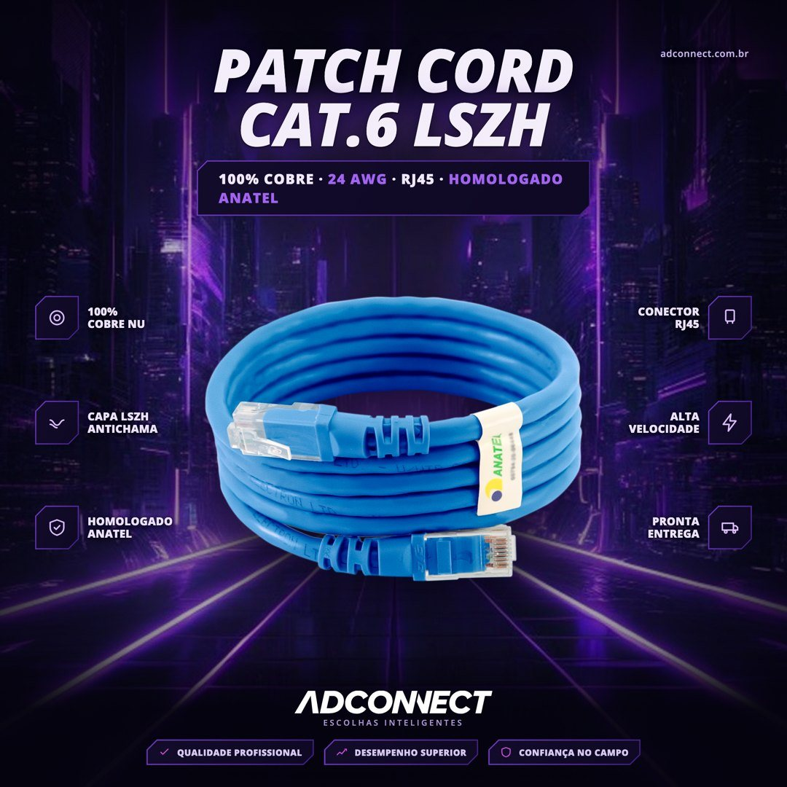
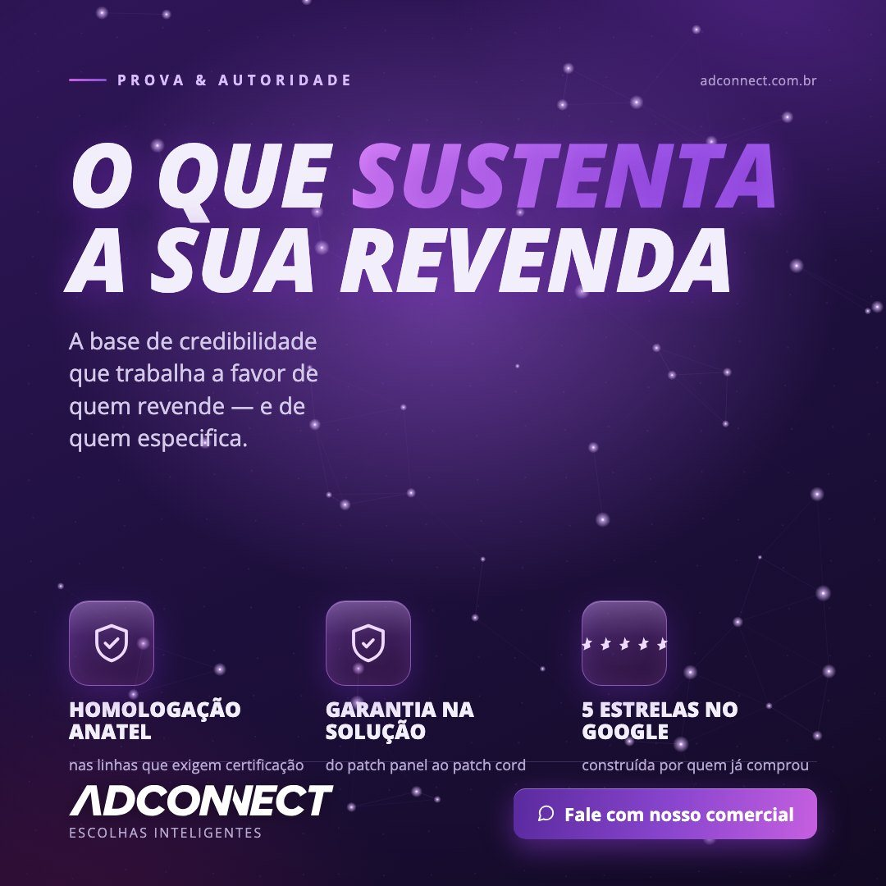
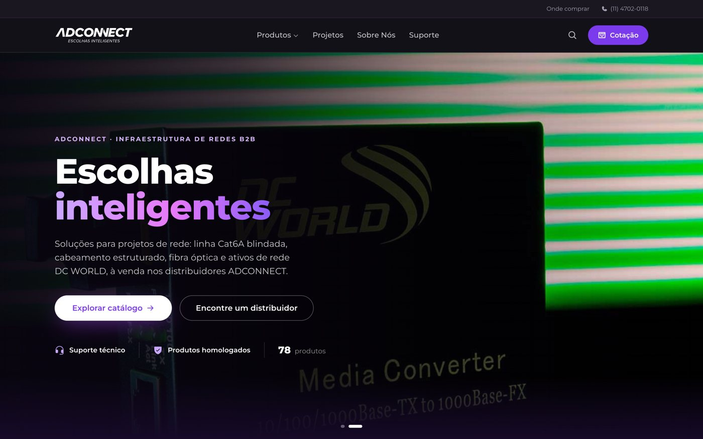

1 · Redes sociais e conteúdo
Calendário, copy e design feitos por mim
A vaga pede: experiência em gestão de redes sociais e marketing digital, redação impecável e autonomia para cumprir cronogramas.
- Planejo o calendário editorial por pilar e cumpro os prazos com a equipe.
- Escrevo a copy e desenho os posts no Photoshop e no Illustrator, e edito vídeo no CapCut.
- Lidero a pessoa responsável pelas redes sociais, com estratégia, prazos e avaliação de desempenho.
- Na Forcoming, meu e-commerce de tênis, criei o conteúdo da loja para Instagram e TikTok e fiz ações com influenciadores.
- Na Mix Conceito Decor, aumentei o engajamento orgânico em 35% e os leads qualificados em 50%.



2 · Campanhas e captação
Campanha sazonal com meta, teste e resultado
A vaga pede: estruturar campanhas sazonais, acompanhar o tráfego pago e a agência, e captar e contatar os leads gerados.
- Crio e gerencio campanhas de Google Ads, Meta Ads e LinkedIn Ads para lançamentos, promoções e marca.
- Criei do zero as réguas de nutrição e automação no RD Station: a base ativa foi de 150 para 550 clientes (+266% de alcance).
- Venho de vendas: prospectei e conquistei 40 clientes novos por ano na NZ Representações, então sei fazer o contato com o lead depois que ele chega.
Caso: campanha de programação de compra
Objetivo: levar os distribuidores da base e prospects a fechar o plano de compras dos meses seguintes.
Canais: régua de e-mail no RD Station e anúncios pagos nas redes sociais.
Testes A/B: assunto do e-mail, criativo e anúncios. Fiquei com as versões vencedoras e batemos a meta dentro do mês.
3 · Frequência e retenção
Fazer o cliente voltar é o meu ponto mais forte
A vaga pede: planejar, organizar e executar a campanha interna de Alta Frequência e manter comunicação constante com a gestão comercial.
- Como gestor de contas, reduzi o churn em 15% e aumentei o ticket médio em 20% com ações personalizadas e campanhas baseadas em dados.
- Fiz crescer 30% o programa de fidelização Smart, com comunicação que fala do benefício para quem participa.
- Trabalho lado a lado com o comercial e acompanho o impacto das ações nos resultados.

4 · Presença física e parceiros
Gosto de estar no lugar onde o cliente está
A vaga pede: presença nas unidades, eventos internos e externos, parcerias locais e o cuidado com o material de divulgação no ambiente físico.
- Na NZ Representações trabalhei em campo, com visitas a clientes e feiras.
- Na Adconnect fiz visitas, promotoria e treinamentos para os parceiros, e cuido do relacionamento com eles.
- Desenho material impresso pronto para produção, como embalagens e etiquetas de produto.


5 · Métricas e ferramentas
Medir para saber o que repetir
- Acompanho KPIs de funil (CAC, LTV, conversão) em dashboards usados pela diretoria.
- Construí com Claude Code a plataforma interna de marketing da empresa: aprovação de conteúdo, e-mail marketing e painel de resultados.
- Construí o novo site da empresa, com caminhos de contato direto para o time comercial.

